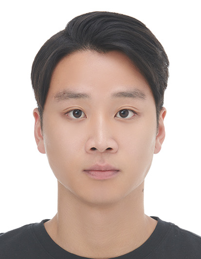

Chan Min Jeon
2000.06.04
Republic of Korea

Education:
-
International School of Kuala Lumpur (Kuala Lumpur, Malaysia)
- Elementary School
-
Middle School
-
Shanghai American School, Pudong (Shanghai, China)
-
Middle School
-
High School
-
Handong Global University (Pohang, Republic of Korea)
- 2020 - Current
- Estimated Graduation Year (2026)
- Major: Integrated Convergence Technology & Global Entrepreneurship
Work Experience:
-
K-Contents Expo (Interpreter)
- 2024 August (Kuala Lumpur, Malaysia)
-
Provided oral interpretation (Korean, English) for Korea media contents company (ULTRAMEDIA) at the K-Contents expo. Translated documents and business inquiries from Southeast Asian clients.
-
Super Junior Concert (Interpreter)
- 2024 August (Kuala Lumpur, Malaysia)
-
Provided oral interpretation (Korean, English) for the stage manager for Super Junior concert (2024). Aided in oral interpretation for stage staff during concert.
Skills:
- Python
- Web Development
- 115KG Bench Press